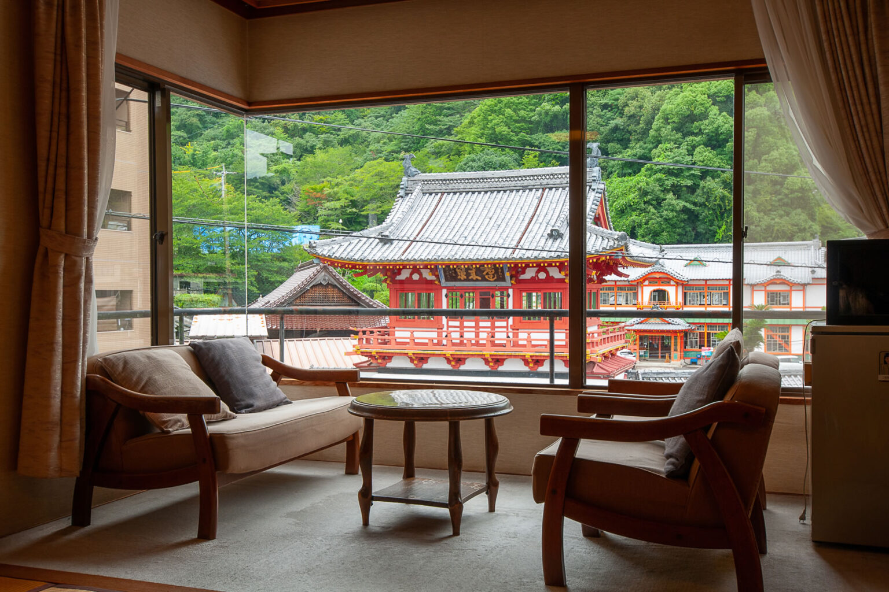

入口一帶
花之路
フラワーロード
四季都有花從入場口延伸進去的第一段路
入園後最先遇到的花景帶，一年四季換不同的花。這是拍風車與花的經典位置，也是你們每天進出必經的一段——不必特地安排時間，走過就是了。

01 / THE DAYS
選一天，翻一頁。
車次與散步時間為規劃；已訂時刻另有標記。
02 / A PLACE TO STAY
五段旅宿，剛好九晚。
東洋館與博多新大谷已決定保留。
住宿金額為兩人一室的整筆訂單，當地另收稅費依住宿方確認。東洋館配圖為官方空間示意，不代表已訂「藤」房型的景觀。
03 / BEFORE WE GO
東洋館與新大谷已保留。以下五筆住宿請到原訂房平台辦理取消，收到取消確認信後再打勾。
勾選僅記錄此瀏覽器的處理進度，不會取消訂單或跨裝置同步。
匯入行事曆後，10/16 09:00（台灣）提醒；目前未替你建立行事曆事件。建議現在就處理，不必等到提醒日。
04 / IN YOUR POCKET
交通、餐桌與備案。
需要時再展開，讓眼前的風景先說話。
10/24｜福岡機場 → 博多 → 武雄溫泉 → 東洋館
國際線抵達後，依當日接駁與交通狀況前往博多；搭接力海鷗號至武雄溫泉。帶大行李可由車站搭計程車至旅館，下午 15:00 入住。
10/26｜武雄溫泉 → 長崎
早餐後退房，直接搭西九州新幹線海鷗號往長崎，不必折返博多。班次請以訂票時查詢為準。
10/28｜長崎 → 豪斯登堡
規劃搭快速海濱線；先確認當日直達或轉車方式，再決定退房後出發時刻。
10/31｜豪斯登堡 → 博多 → 渡邊通
特急回博多，轉地鐵七隈線至渡邊通，新大谷距離車站步行約 1 分鐘。接下來連住兩晚。
桃園第二航廈 → 福岡國際線
規劃約 03:35 抵達桃園機場，預留報到時間。
福岡國際線 → 桃園第二航廈
規劃 09:00 抵達國際線，先處理免稅品查驗。
航班來自 8/12 電子機票，時間為各地當地時間。該張票託運額度 2 件；出發前再確認最新班表與同行者票券。
10/27 先到軍艦島數位博物館，09:00–10:00 報到換票。10:10 開始登船、10:20 前上船，10:30 常盤碼頭出航，約 13:15 回港。
準備 QR 碼及誓約書；大件行李留在飯店。業者約 08:30 依海況通知，可能改周遊或停航。QR 碼請從原信開啟。
業者官方網站 ↗日本自 2026/11/01 購買分起採先付含稅價、出境查驗後退款的制度。11/02 到福岡機場後，先辦理免稅品確認，再託運行李；依商店指示完成退款方式登記。
10/31 前的購物依舊制辦理，但仍須攜帶免稅品出境，不能理解為完全不需海關查驗。
日本觀光廳・旅客說明 ↗下面保留原專案的深度口袋指南。店家、園區節目與估價供規劃參考；今年活動時刻請以官方公告為準，每日安排以本頁新版行程為準。
04 ／ 園區導覽
豪斯登堡分成海側的海港區與內側的主題公園區，各區性格差很多。以下按你們的三天排序——不必照走，知道大概在哪就好。

入口一帶
フラワーロード
四季都有花從入場口延伸進去的第一段路
入園後最先遇到的花景帶，一年四季換不同的花。這是拍風車與花的經典位置，也是你們每天進出必經的一段——不必特地安排時間，走過就是了。
秋玫瑰主場
アートガーデン
秋玫瑰 10 月下旬開始官方帳號往年提到十一月上旬才進入盛開
大型庭園區，初夏是百萬朵玫瑰祭的主場「大玫瑰園」，秋天則輪到秋玫瑰。秋玫瑰的顏色比初夏深，香氣也濃。這裡還有音樂噴泉秀「水之魔法」。
你們去的時候是開始開花的階段，不是最盛期，這點要有心理準備。把相機放低一點，可以把玫瑰和摩天輪、多姆托倫塔一起入鏡。
遊樂設施集中
アトラクションタウン
EVA 八K 騎乘劇院在這裡天空旋轉木馬也在本區
各種遊樂設施集中的一區，包含常設的 EVA 八K 騎乘劇院、雙層的天空旋轉木馬。小孩也能玩的項目多，動線密集，適合一次解決。
數位體驗
光のファンタジアシティ
室內為主下雨或天黑之後的好去處
體驗型數位設施集中的一區，走進去互動的那種。因為是室內，天氣不好或晚上不想在外面吹風時特別好用——10/28 晚上不看秀的話，這裡是首選。
地標
タワーシティ・ドムトールン
園區最高點登塔可俯瞰全園與大村灣
多姆托倫塔是園區的地標與最高點，上去可以把整座荷蘭小鎮和大村灣一次看完。白天看街區配置，入夜看燈——同一天上去兩次也不虧。
海側
ハーバータウン
面大村灣森林小木屋也在這一側
面海的一區，綠地多、人少、風大。你們前兩晚的小木屋就在這一側，早晚散步很舒服。從這裡看夕陽落進大村灣，是園內少數不靠燈光取勝的風景。
街區與住宿
アムステルダムシティ・パレス ハウステンボス
商店與餐廳最密宮殿前庭是恐怖企劃的場地
運河兩側的街區，商店、餐廳、米菲兔相關店舖集中在這一帶，第七天住的阿姆斯特丹飯店也在正中央。宮殿是仿荷蘭王宮的建築，前庭在萬聖節期間是恐怖企劃的場地，白天則可以進宮殿後方的庭園。
運河
カナルクルーザー
當交通工具用連接各區碼頭
園區的運河串起各區，遊船可以當成移動手段。走累的時候搭一段，是這座園子最舒服的偷懶方式。
05 ／ 不看秀的晚上
恐怖企劃週三休演。就算夜間秀也不看，這座園子入夜之後仍有四種去處，依體力由高到低排列。

想動一動
ドムトールン
園區最高點
入夜後上多姆托倫塔，整座小鎮的燈從腳下鋪開，比在地面上看更有秩序感。順便替隔天規劃路線。
室內
光のファンタジアシティ
體驗型數位設施
整區都在室內，不受天氣影響，晚上人也比白天少。這是 10/28 那晚最實在的選項。
喝一點
ワイン祭
萬聖節同期舉辦
約五十款世界與九州的葡萄酒，配著餐慢慢喝。不必排隊、不必看時刻表，坐下來就好。
最懶
アムステルダムシティ
全園常設點燈
豪斯登堡整年都有夜間點燈，不需要任何門票之外的東西。沿著運河從街區走回小木屋，路上會經過湖區，那一段幾乎沒人。
09 ／ 買什麼
這一章按「在哪買」排，不按「買什麼」排——你們的移動路線已經決定了能買到什麼。 重點只有兩個：哪些是從這裡起家的，以及哪些只有當地買得到。

| 品牌 | 起源 | 在福岡買的意義 |
|---|---|---|
| 茅乃舍（久原本家） | 糟屋郡久山町 | 總本店在福岡縣內。博多站 JR 博多城設有「久原本家 茅乃舍・椒房庵」，賣博多限定飛魚高湯與椒房庵飛魚高湯明太子 |
| 福屋（ふくや） | 1949 博多 | 辛子明太子就是這家發明的，日本第一家商品化的業者。總本店在中洲 |
| 一蘭 | 1960 早良區 | 總本店在中洲川端。伴手禮有盒裝拉麵 |
| 一風堂 | 1985 中央區 | 大名本店走路就到，你們 11/01 逛大名時順路 |
| Pietro 沙拉醬 | 天神 | 義大利麵店起家，1991 年推出沙拉醬。全國有售，但天神有本店 |
| Tirol 巧克力（チロルチョコ） | 田川市 | 松尾製菓，1962 年開始 |
其他總部設在福岡的知名企業：TOTO（北九州）、安川電機、Zenrin 地圖（ゼンリン）、Bridgestone（久留米創業）、Yakult。買不到，但知道了會覺得有趣。
最有名
明月堂
白豆餡加奶油，濕潤不甜膩。幾乎是福岡伴手禮的預設答案。
老鋪
石村萬盛堂
棉花糖包黃身餡，口感特別，喜歡的人很喜歡。
造型
東雲堂
博多俄面具造型的煎餅，附紙面具，帶回去給小孩最好用。
黃豆粉
如水庵
黃豆粉麻糬淋黑糖蜜，冷藏後更好吃。
意外
飯塚市發祥
常被當成東京名產，其實發祥於福岡縣飯塚市。
工藝
傳統工藝
獻上柄的腰帶與小物、素燒彩繪人形。百貨與博多町家鄉土館一帶找得到。
這裡只收兩種店：名氣與實力對得起來的老鋪，以及地元真心推薦、不是觀光財的隱藏款。查過在地評價後，多加了一家你們可能沒聽過的。
| 店 | 創業 | 特色 |
|---|---|---|
| 岩永梅寿軒 | 1830 | 不設分店、不批發，只有長崎人才搶得到的「幻之蛋糕」。不接受臨櫃排隊以外的購買，招牌其實是和菓子「もしほ草」 |
| 福砂屋 | 1624 | 蜂蜜蛋糕御三家之一，蛋味濃、口感濕潤，評價最穩定 |
| 松翁軒 | 1681 | 自稱「蛋糕元祖」，堅持手燒、職人各自顧窯，濕潤度不輸福砂屋 |
| 文明堂總本店 | — | 三大之一，濕潤度評價略遜前兩家，但仍是穩定的老字號選擇 |
| 角煮饅頭 | 岩崎本舗 | 東坡肉夾饅頭，冷凍宅配也做 |
| 烏魚子 | — | 長崎三大珍味之一。價格高，買前先看等級 |
長崎縣波佐見町的陶瓷。傳統是白瓷配藍色染付，近年多是簡約現代的設計， 日常好用、價格親民，是這一帶最值得帶回去的器物。
⚠ 產地在波佐見町，不在長崎市。長崎市內與長崎站的店買得到，但選擇比產地少得多。 產地的主要店家有陶藝物產館（くらわん館，町內最大、集合三十多家窯元）、Maruhiro 選品店（マルヒロ，人氣新銳品牌，陶器市會大排長龍）、南創庫、OYANE、natural69、aiyu。 長崎市內的具體店家我沒查到，現場問或行前再查。
有田燒在佐賀縣，不是福岡也不是長崎——但它就在你們的動線上。 有田瓷器城（アリタセラ）是有田燒的購物中心，一次能比完二十二家商社的貨。
品項從日用食器、送禮用一路到營業用食器與高級美術陶瓷都有。 ⚠ 離車站要搭計程車，走路不划算；十點才開門，太早到會空等。

資料查自各品牌與地方政府官方網站、觀光協會頁面（2026 年 8 月查閱）。 陶器市集與祭典的日期整理在下一章「期間限定」。碰不到市集也不必可惜——有田瓷器城與波佐見的物產館都是常設賣場，全年開著。
11 ／ 小眾行程
這一章挑的不是熱門景點，是查得到「在地人推崇、遊客卻不多」證據的地方。 標準只有一個：夠格但不主流。都是能插進現有動線的小事，沒有一項需要另外挪出半天。
第 2 天・太宰府
光明禅寺
天滿宮參道旁走 5 分鐘09:30–16:30，全年無休（法會時臨時休）
九州唯一一座枯山水庭園，人稱「苔寺」。就在天滿宮參道旁，遊客卻少得多——這正是它上榜的原因：離主景點五分鐘路程，卻沒什麼人繞進去。境內禁止攝影，安靜坐一會兒就好。
門票金額查無官方資料，現場備小額現金即可；遇法會臨時休館的話別撲空，出發前可先電話確認（092-922-4053）。
第 4 天・長崎
崇福寺
崇福寺電車站步行數分鐘離新地中華街不遠
長崎三大唐寺之一，第一峰門與大雄寶殿都是日本國寶——這個等級在長崎沒有幾處。哥拉巴園天天排隊拍照，這裡的唐風寺院境內常常沒幾個人。10/27 軍艦島回港後你們本來就要到新地中華街吃午餐，順路繞進去半小時就夠，不必另外排時間。
第 9 天・大名
FUKUOKA CRAFT by エルボラーチョ
大名店內11 款生啤＋20 多款進口瓶罐
福岡在地釀造廠的直營酒吧，啤酒在遠賀郡岡垣町自家廠釀造後直送這裡，喝的是道地福岡精釀，不是連鎖啤酒屋的量產貨。11/01 逛大名、今泉時就在路上，逛累了進去坐一下，比硬排熱門店划算。
資料查自各官方網站與在地評論（2026 年 8 月查閱）。這三個是查證過在地口碑後留下的，不是清單全部——標準是「在地真心推崇」，寧可少也不放濫竽充數的。
14 ／ 名稱對照
這一頁的內文都用中文寫。下面這些是訂票、問路或看指標時實際會派上用場的日文原名。
05 / THE LITTLE NUMBERS
已保留住宿共 ¥357,218，不再計入五間待退住宿。
待退訂單不是已退款；取消費若發生，另行加入。
預留額含未訂交通、日常餐飲、園區門票與購物。金額可調整；非實際匯率或報價。
只取得一張 NT$4,625 電子票，另一人暫按同額。博多紀念日晚餐 ¥25,740 暫不計入主行程，仍需改期或取消；若保留或產生取消費，請加入預留額。